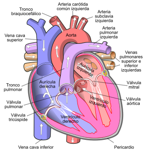

SISTEMA CICULATORIO
El sistema circulatorio es la estructura anatómica compuesta por el sistema cardiovascular que conduce y hace circular la sangre, y por el sistema linfático que conduce la linfa unidireccionalmente hacia el corazón. En el ser humano, el sistema
cardiovascular está formado por el corazón, los vasos sanguíneos (arterias, venas y capilares) la sangre, y el sistema linfático que está compuesto por los vasos linfáticos, los ganglios, los órganos linfáticos (el bazo y el timo), la
médula ósea y los tejidos linfáticos (como la amígdala y las placas de Peyer) y la linfa. La sangre es un tipo de tejido conjuntivo fluido especializado, con una matriz coloidal líquida, una constitución compleja y de un color rojo característico.
Tiene una fase sólida (elementos formes, que incluye a los leucocitos (o glóbulos blancos), los eritrocitos (o glóbulos rojos) , las plaquetas y una fase líquida, representada por el plasma sanguíneo (Figura 10). La linfa es un líquido
transparente que recorre los vasos linfáticos y generalmente carece de pigmentos. Se produce tras el exceso de líquido que sale de los capilares sanguíneos al espacio intersticial o intercelular, y es recogida por los capilares linfáticos,
que drenan a vasos linfáticos más gruesos hasta converger en conductos que se vacían en las venas subclavias. La función principal del aparato circulatorio es la de pasar nutrientes (tales como aminoácidos, electrolitos y linfa), gases,
hormonas, células sanguíneas, entre otros, a las células del cuerpo, recoger los desechos metabólicos que se han de eliminar después por los riñones, en la orina, y por el aire exhalado en los pulmones, rico en dióxido de carbono (CO2).
Además, defiende el cuerpo de infecciones y ayuda a estabilizar la 'temperatura y el pH para poder mantener la homeostasis. En los vertebrados más evolucionados, de características homeotermas, como las aves y los mamíferos (incluido el
ser humano), el corazón tiene cuatro cámaras (tetracameral) y la circulación es doble y completa

CORAZON
En la circulación sanguínea donde la sangre recorre dos circuitos o ciclos, tomando como punto de partida el corazón Circulación mayor o circulación sistémica o general. El recorrido de la sangre comienza en el ventrículo izquierdo del corazón,
cargada de oxígeno, y se extiende por la arteria aorta y sus ramas arteriales hasta el sistema capilar, donde se forman las venas que contienen sangre pobre en oxígeno. Desembocan en una de las dos venas cavas (superior e inferior) que
drenan en la aurícula derecha del corazón. Circulación menor o circulación pulmonar o central. La sangre pobre en oxígeno parte desde el ventrículo derecho del corazón por la arteria pulmonar que se bifurca en sendos troncos para cada
uno de ambos pulmones. En los capilares alveolares pulmonares la sangre se oxigena a través de un proceso conocido como hematosis y se reconduce por las cuatro venas pulmonares que drenan la sangre rica en oxígeno, en la aurícula izquierda
del corazón. En realidad no son dos circuitos sino uno, ya que la sangre aunque parte del corazón y regresa a éste lo hace a cavidades distintas. El circuito verdadero se cierra cuando la sangre pasa de la aurícula izquierda al ventrículo
izquierdo. Esto explica que se describiese antes la circulación pulmonar por el médico Miguel Servet que la circulación general por William Harvey.

Sistema porta hepático
Las venas originadas en los capilares del tracto digestivo desde el estómago hasta el recto que transportan los productos de la digestión, se transforman de nuevo en capilares en los sinusoides hepáticos del hígado, para formar de nuevo venas
que desembocan en la circulación sistémica a través de las venas suprahepáticas a la vena cava inferior.

Sistema porta hipofisario
La arteria hipofisaria superior procedente de la carótida interna, se ramifica en una primera red de capilares situados en la eminencia media. De estos capilares se forman las venas hipofisarias que descienden por el tallo hipofisario y originan
una segunda red de capilares en la adenohipófisis que drenan en la vena yugular interna. Los componentes más importantes del sistema cardiovascular humano son el corazón, la sangre, y los vasos sanguíneos. Esto contiene: la circulación
pulmonar, un ciclo a través de los pulmones, donde se oxigena la sangre y la circulación sistémica, el resto del cuerpo para proporcionar sangre oxigenada
>